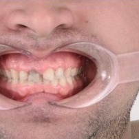
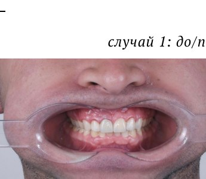
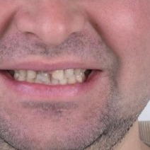
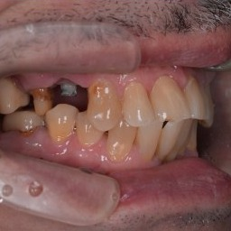
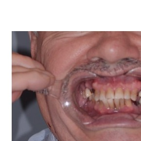
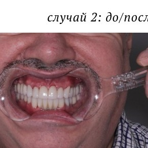
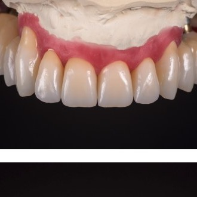
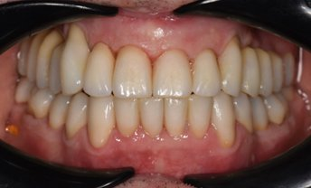
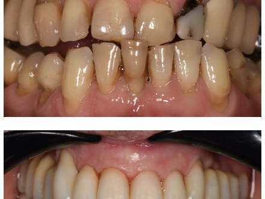
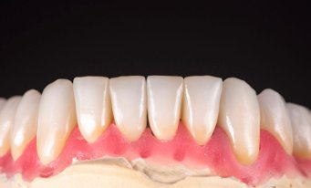

Гигиена полости рта
Профессиональная чистка, удаление зубного камня и налёта, профилактика кариеса и заболеваний дёсен.
стоматолог-ортопед
Безупречная улыбка и комфорт — мой приоритет

Dr.Baisangur Bitiev

Меня зовут Битиев Байсангур, я стоматолог-ортопед из Москвы. Оказываю полнофункциональное эстетическое восстановление зубов, ставлю коронки и виниры, а также моя команда оказывает весь спектр стоматологических услуг: имплантация, профилактика кариеса, ортодонтическое лечение на брекетах, все виды протезирования зубов, отбеливание и гигиена.
Я родом из горного села Элистанжи, что в Чечне. Мы с семьей переехали в Барнаул, когда мне было 2 года. Там я вырос, закончил школу и медицинский университет, выбрав путь стоматолога.
С юности всегда искал способы развиваться и быть самостоятельным. Даже будучи студентом, старался познать все тонкости стоматологии: я бесплатно ассистировал именитым докторам в городе и дежурил в разных стационарах, чтобы научиться правильно взаимодействовать с пациентами. Это закалило характер и научило ценить труд.
После окончания университета в 2019 году было решено переехать в Новосибирск, чтобы поступить в ординатуру по специальности стоматолог-ортопед. Я понимал, что в городе-миллионнике больше возможностей, и все шансы быстрее освоить мировые протоколы в стоматологии.
Я устроился в самую известную клинику Новосибирска с собственным учебным центром, и чтобы начать там работать, пришлось пройти жесткий отбор, который прошли только единицы. За время работы там я научился работать по мировым протоколам, освоил работу с микроскопом, начал вести счёт пролеченных зубов, поставив цель — достичь 1000 за год. К слову, сейчас план перевыполнен в 6 раз.
Весной 2022 года я переехал в Москву. Моя цель — помочь людям жить лучшую жизнь через здоровую и красивую улыбку.
«Стоматология — это искусство и наука одновременно. Она требует не только мастерства и знаний, но и тонкого понимания красоты. Каждое лечение — это не просто медицинская процедура, а акт создания гармонии между здоровьем и эстетикой.» — Dr. Baisangur Bitiev
Dr.Baisangur Bitiev
Я ставлю высокоэстетичные виниры, предлагаю современные средства и технологии для безболезненного и быстрого лечения зубов. Моя команда оказывает полный спектр стоматологических услуг.
Профессиональная чистка, удаление зубного камня и налёта, профилактика кариеса и заболеваний дёсен.
Высокоэстетичные виниры и люминиры для коррекции формы, цвета и мелких дефектов зубов.
Циркониевые коронки — прочность, долговечность и естественный вид. Гарантия 2 года, срок службы 15+ лет.
Лечение дисфункции ВНЧС, болей в челюсти, бруксизма. Восстановление правильного прикуса.
Профессиональное отбеливание зубов безопасными системами с контролируемым составом.
Дентальная имплантация, инновационные импланты из биосовместимых материалов, компьютерное планирование.
Dr.Baisangur Bitiev
Современная стоматология развивается стремительно, внедряя передовые методики, технологии и материалы, которые делают лечение более эффективным, безопасным и комфортным для пациентов.
Dr.Baisangur Bitiev
Почему стоит доверить свою улыбку именно мне?
Для достижения высококлассного результата использую все доступные современные методики и технологии, а также материалы проверенных фирм.
Каждый пациент и каждый случай неповторимы. Моя методика лечения — индивидуальный подход на всех этапах планирования, лечения и последующего наблюдения.
Всегда на связи. Даже после окончания процедуры вы можете написать по любым вопросам.
Гарантия на коронки и виниры — 2 года. Срок службы — более 15 лет.
Dr.Baisangur Bitiev
Реальные случаи из практики. Эмоции, которые невозможно подделать.




Пациент ударился передними зубами ещё в юности — зубы сильно пострадали, он стеснялся улыбаться.
Шаги восстановления:
Вся работа заняла около месяца. Пациент снова мог улыбаться без стеснения в любой ситуации.
Мужчина, инженер с плотным рабочим графиком. Всё время посвящал работе, поэтому долгие годы откладывал визит к стоматологу. Когда решил заняться здоровьем, обратился с серьёзными проблемами: сильный износ зубов, потемнение эмали, недостаток нескольких зубов.
Шаги восстановления:
Вся работа продолжалась 9 месяцев. Впервые за много лет пациент мог спокойно улыбаться и не стесняться.





Однажды он попал в серьёзную аварию. Удар пришёлся в область лица: сломана верхняя челюсть, раздроблены передние нижние зубы, смещение всего зубного ряда.
Врачи попытались спасти зубы насколько это было возможно: установили шины, фиксировавшие зубы в единой связке. Из-за этого отцу пришлось полгода питаться через трубочку. Он привык к своему отражению в зеркале, смирился с дискомфортом и жил с этим до 54 лет.
Когда я начал свой путь в стоматологии, я дал себе обещание, что помогу ему вернуть красивую и здоровую улыбку.
Отец снова стал широко улыбаться. Это была не просто медицинская работа — это история о благодарности и о том, как знания и опыт могут изменить жизнь близкого человека.




Dr.Baisangur Bitiev
В стоматологии существует большое количество мифов, которые могут вводить пациентов в заблуждение. Разберём самые известные.
Если зубы не болят — они здоровы
Миф. На начальной стадии кариеса зубы не болят. Болевые ощущения появляются намного позже. Узнать о проблемах можно только при профилактическом осмотре — минимум раз в полгода.
Чем жёстче щётка, тем она лучше
Миф. Жёсткие щётки при неправильной технике чистки могут испортить эмаль. Определяющий момент — не жёсткость, а количество и плотность щетинок. Хорошо, если их много и пучки плотные.
Сладкое вредно для зубов
Правда. Всё зависит от частоты потребления и времени нахождения сладкого во рту. Когда мы едим что-то сладкое, pH-среда во рту становится более кислой, зубы слабеют и быстрее портятся.
Избыток фтора вреден для зубов
Правда. Фтор в большом количестве может привести к флюорозу — эмаль теряет прочность, появляются белесые пятна. В нормальных дозах фтор помогает предотвратить кариес и укрепить зубы.
Зубы мудрости всегда нужно удалять
Миф. Хотя зубы мудрости часто создают проблемы, их удаление не всегда необходимо. Если они правильно растут и не вызывают дискомфорта, их можно оставить — но важно следить за их состоянием.
Отбеливание зубов вредно
Миф. Современные технологии отбеливания безопасны, если процедуры проводятся правильно и профессионально. Системы с контролируемым составом не повреждают эмаль при соблюдении рекомендаций стоматолога.
Лечение зубов всегда дорого
Миф. Если ходить к стоматологу хотя бы два раза в год, можно избежать дорогостоящего лечения. Одна-две пломбы не обойдутся слишком дорого. Но если визиты редки — придётся восстанавливать много зубов, и это точно крупная сумма.
Dr.Baisangur Bitiev
Здоровая улыбка — это, прежде всего, отношение самого человека к своему здоровью, а только потом работа врача.
Чистите зубы не менее 2 минут утром и вечером; используйте мягкую или среднюю щетину, чтобы не травмировать эмаль и дёсны; меняйте щётку каждые 2–3 месяца; дополняйте уход зубной нитью или ирригатором — они помогают очистить места, куда щётка не достаёт.
Сократите потребление сахара — сладости, газировки и даже соки создают идеальные условия для кариеса. Включите в рацион продукты, богатые кальцием и фтором: молочные продукты, рыбу, орехи, зелень. Жуйте твёрдые овощи и фрукты — они естественным образом очищают зубы.
Даже если вас ничего не беспокоит, посещайте стоматолога 2 раза в год. Профессиональная чистка помогает удалить зубной камень и налёт. Чем раньше обнаружить проблему (например, кариес на ранней стадии), тем легче и дешевле её устранить.
Забота о зубах — это уважение к себе, инвестиция в будущее и способ выразить свою внутреннюю гармонию.
Dr.Baisangur Bitiev
Удобнее всего написать мне в Telegram — отвечаю быстро и подробно.
Записаться на приём @BaisangurB